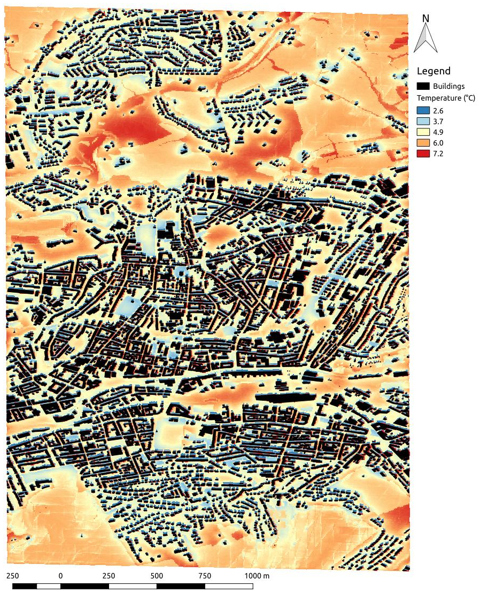

Next: Discussion Up: Results Previous: Comparison to reference studies
The transition of the German energy supply to a low carbon system will not be possible without the decarbonisation of heat production [9], which represents almost two-third of Germany's energy consumption. Electrification by the means of heat pumps is suggested to play a considerable role [35]. Heat pumps use electricity to transfer heat from colder sources (e.g. outside air or underground) to heat sinks through the compression of a medium called refrigerant.
To demonstrate one possible application of UBE-FMI and which role it can play for the future management of energy systems, a scenario with the simulation conditions for "live" simulation in Table 1 was constructed. But the heating and hot water system in every building were replaced with heat pumps. The spatial variations (two-dimensional) of climate conditions were estimated with the Urban Multi-scale Environmental Predictor (UMEP) [37] to approximate urban microclimate. The outcome for air temperature of one time step can be seen in Figure 11. The spatially varying climate conditions could directly be applied to the closest building surface of every individual building due to the FMI implementation of UBE-FMI. Energy simulations for every building with their own specific and heterogeneous climate conditions were conducted for the period of one week-day. The results of electricity demand for all buildings in the area are aggregated in Figure 12. It shows a week-day demand for electricity with an high temporal resolution (10min). The demand peaks in the evening hours when the occupants return home and require heating and hot water. Another peak is in the morning hours. The demand is low during working hours as residential buildings are less occupied. The ENTSO-E Transparency Platform of the European transmission system operators [12] provides data of the European electricity composition by source. Figure 12 illustrates that the largest gap in the satisfaction of electricity demand from renewable sources is during the peak hours in the evening. Even with continuing efforts in the expansion of renewable energy supply, the satisfaction of peak demand will pose a challenge. Therefore, demand response strategies are an appropriate mean to reduce peak demand [53,20]. In Figure 12, the peak load can be reduced by 25MWh if the thermostat setpoint is lowered by during the peak hours. UBE-FMI can predict this impact when supplied with weather forecasts. In the light of climate change and the possibility to run heat pumps in cooling mode, demand response strategies and the ability to estimate their impact on demand will also become more relevant in the summer season. UBE-FMI could contribute to better align demand with the supply of renewable energy.
|  |
Maikel Issermann